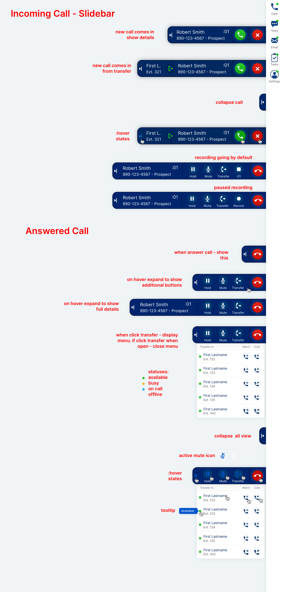

AgencyMVP
Style Guide & Application Redesign
Style Guide & Application Redesign
At AgencyMVP I was coming on as the first design hire of a company that just received funding. They had a vision and an ambitions road map so needed to hit the ground running. First task was to build out a complete voice over IP (VoIP) phone system.
For a minimal viable concept I wanted to start with the essentials, so the basic sidebar design and the calling functionality. I knew that would require the most testing so we planned on building that first.
One of the major first hurdles with this project was the feature needed to work in the current version of the application built on and older front-end that was going to be replaced along with a redesign on the roadmap, so everthing needed to work from a brand perspective but also be something that could work in the existing app but also not have to be rebuilt for the new version. So along with the sidebar and flyout tab menu, the setup screens could also be overlayed on the existing application.
The image below shows some of features for the phone functionality, such as soft and warm transfers, call recording as well as the various states of an incoming and outbound call.
A quick style guide and component library I put together for all of the form components, tables and basic interactions. Today it's a little easier to start with some prebuilt components in Figma and apply the brand styles and make edits accordingly but for this it was all built from scratch, using existing brand colors but for an improved look and experience, as well as speeding up the development process.